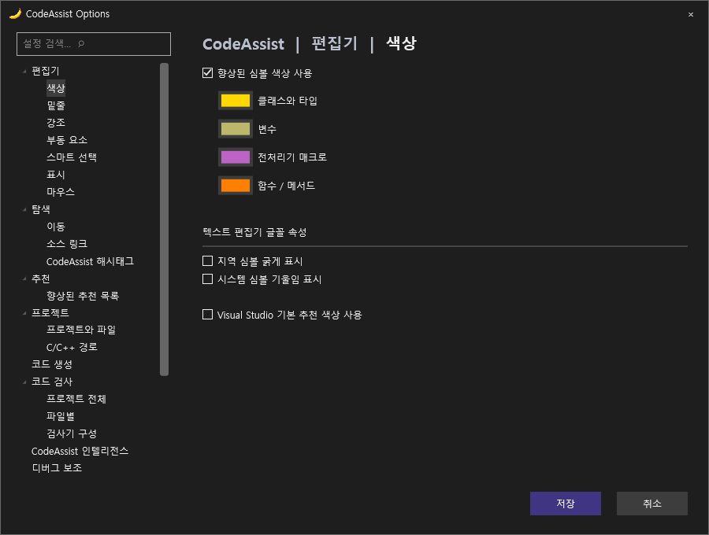

Tracefolio REPORTS & ISSUES
Tracefolio REPORTS & ISSUES0.0.88 레이아웃·디자인 수정
기존 기록 이전원문에 기록된 작업 내용과 당시 검증 범위를 정리한 보관 기록입니다.
CodeAssist 0.0.88 레이아웃 수정
0.0.88 레이아웃·디자인 수정
기존 VA 화면을 기준으로 옵션 창900×680, 좌측 메뉴196px·본문 간격40px, 제목의 | 구분, 하단90×30 버튼과20px 간격, 네모 모서리를 맞췄습니다. 큰 색상 콤보박스를 작은 스와치 버튼으로 바꾸고 매크로·함수 순서를 조정했습니다. 실제로 동작하는 굵게·기울임 옵션을 Coloring에 배치했습니다. 체크박스·라디오 버튼, 선택 색상, 팝업 제목 표시줄을 테마에 맞췄습니다. CodeAssist 전용 메뉴는 Advanced로 이동해 원본 메뉴 순서를 덜 밀도록 했습니다.
완전히 동일한 상태는 아닙니다. Enum/Namespace 색상, 적용 대상 옵션 및 다른 기능별 팝업 배치는 남았습니다. 미동작 토글을 추가해 완료로 처리하지 않았습니다.
VA 실제 화면 ↔ CA 수정 후 WPF 렌더
왼쪽은 기존 실제 VA 촬영, 오른쪽은 수정한 제품 코드의 오프라인 WPF 렌더입니다. 오른쪽을 실제 VS 실행 검증으로 보고하지 않습니다.
VA

CodeAssist 0.0.88

한국어·라이트 테마


검증 및 제한
설치 파일 빌드2/2(100%): VS2019 및 현대 VS 계열. 900×680 WPF 렌더4/4(100%). 색상 스와치 연결·라이브 설정 비변경·검색 필터3/3(100%). 이는 전체 UI 동기화율이 아닙니다.
실제 두 VS 프로세스도 실행했으나 CA가 이전 삭제된 확장 DLL 경로를 참조해 명령 호출이 E_INVALIDARG로 실패했습니다. ActivityLog를 보존했습니다. 확장 구성 갱신을 시도했으며 실제 VS 화면 대조는 통과 처리하지 않았습니다. 전체 동기화율·전체 역분석율은 미확인입니다. 문서 부분 명세108/108(100%)과 구분합니다.
최신 계열 설치 파일 · VS2019 설치 파일 · 검증·SHA256
제안 시간10분 · 실제 9분 24초 · 2026-10-18 10:36:21 KST 결과 정리. XERJ 사용.
최신 VA·CA 108개 시나리오 실제 UI 대조 화면과 계산 결과
원문과 편집 이력
- 원문 SHA-256:
69ec4b3da5e0795ead9668588e4beeecb2cd2c9048ed286e6cd29f5fbab3df97 - 표시 날짜는 원본 파일의 수정 시각입니다. 작업 완료 시각은 원문에 있는 값을 기준으로 확인합니다.